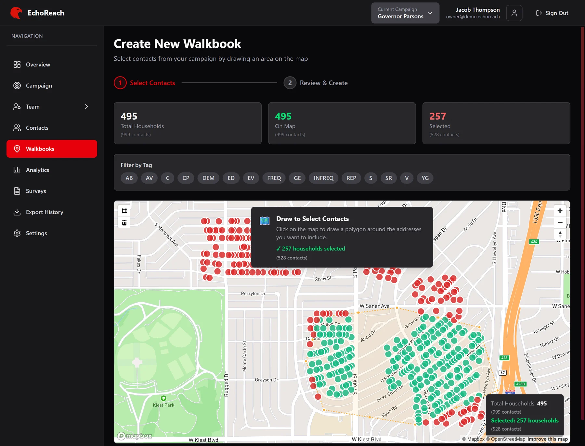
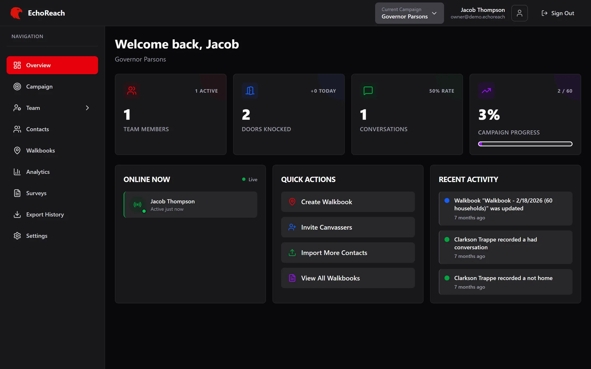
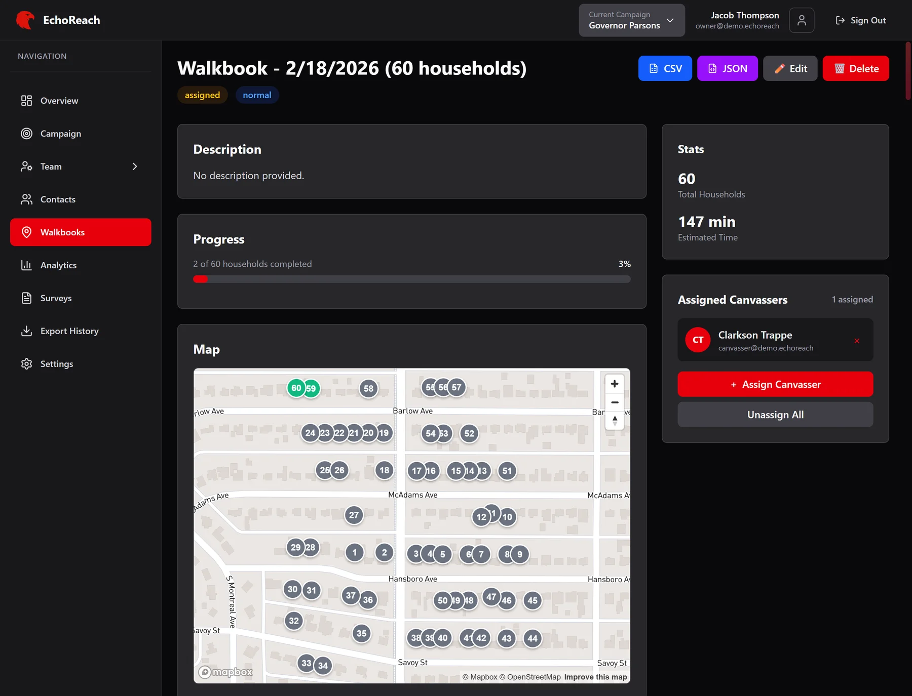
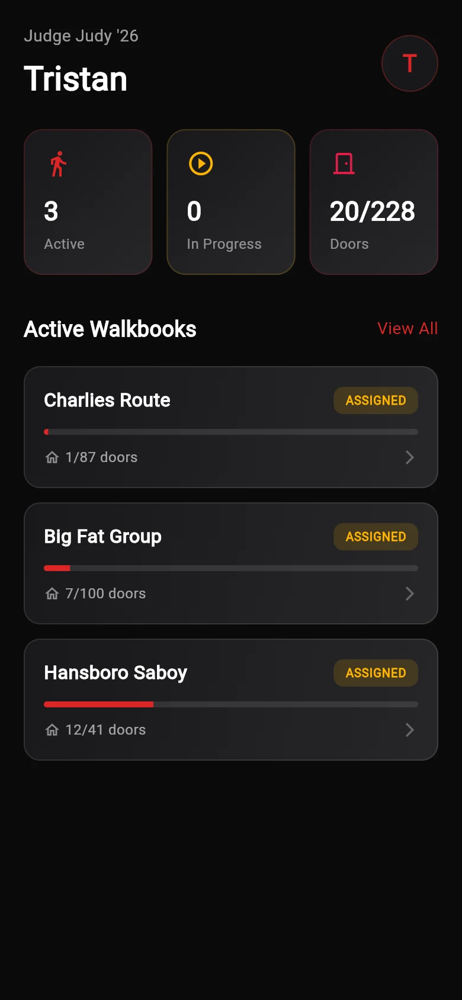
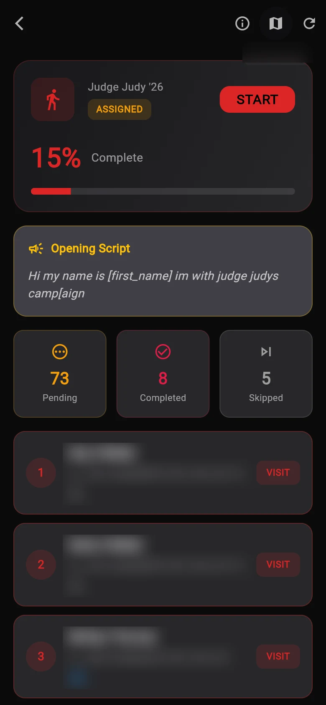
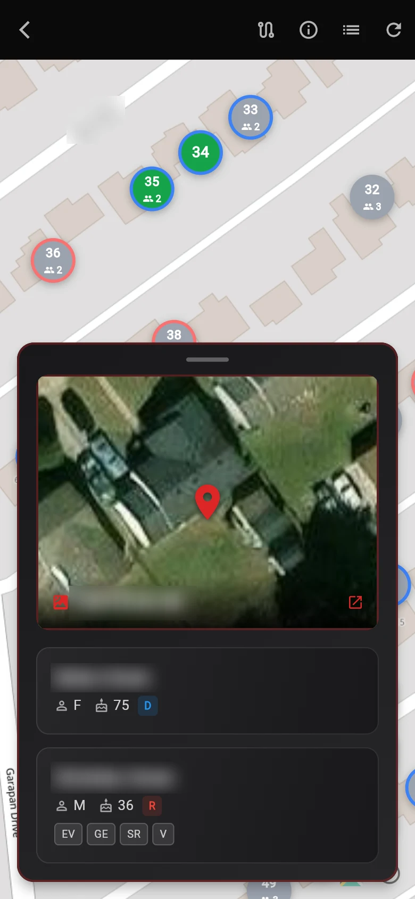
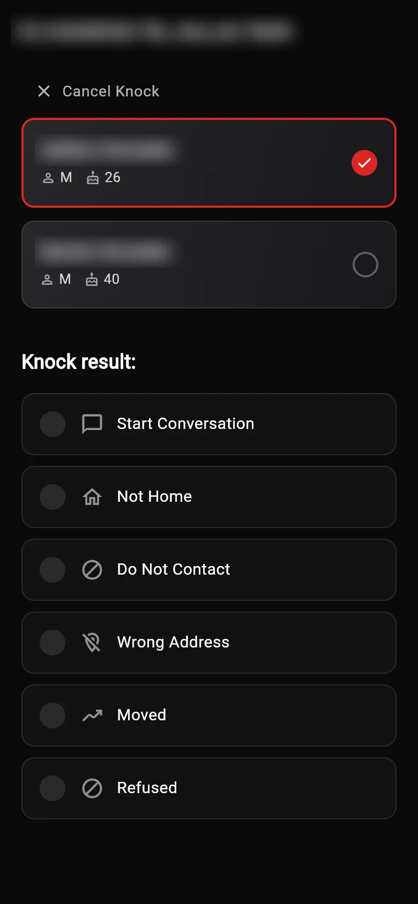
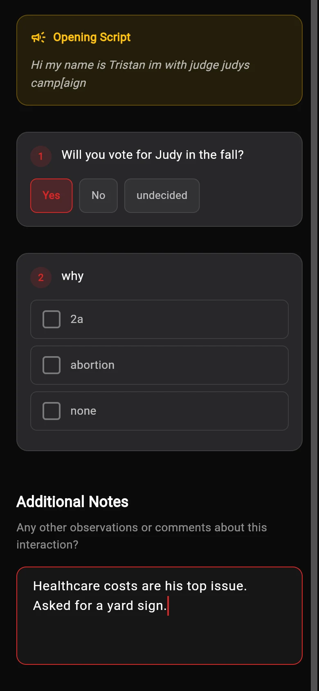

EchoReach
# canvassing platform for political campaigns.
# web admin portal + mobile field app.
overview
Door-to-door canvassing still runs on printed lists and clipboards. Campaign staff hand out turf, volunteers mark results in pen, and someone types it all back in days later. Nobody can tell whether a door was actually knocked.
EchoReach replaces that loop. Campaign staff import a voter file, cut it into walkbooks on a map and assign them to canvassers. Canvassers work the route on their phone, run the survey at each door and log the result. Every knock is saved with a timestamp and GPS location, and shows up on the admin dashboard right away.
admin portal # web
The portal is where a campaign is set up and watched. It covers contacts, walkbooks, surveys, the team, analytics and exports, with role-based access for owners, managers, field directors and data coordinators.



field app # iOS + Android
The field app is built for someone standing on a porch with one free hand. Assigned walkbooks show up with the route and opening script. Each household opens into a short survey, and marking a door as Completed, Not Home, Refused or Moved takes one tap. Managers get their own view to watch team progress from the field.





# household names and addresses blurred
under the hood
- Row-level security on every table. Canvassers only ever see their assigned walkbooks, and campaigns are isolated from each other. The schema has been through 30 migrations.
- Realtime presence over Supabase channels drives the "Online Now" panel and the live canvasser map. No polling.
- Turf cutting uses Mapbox GL Draw. A lasso polygon plus tag filters selects households, which become the walkbook.
- CSV import parses with PapaParse, maps columns and geocodes addresses. Walkbooks group the selected contacts by address into households.
- Push notifications go from the web portal through a Supabase edge function to Firebase Cloud Messaging.
- Invite links use universal links and app links to open straight into the app and join the right campaign.
- One visual language across both apps: the same zinc and red tokens in the Tailwind web UI and the Flutter theme.
details
- role
- part of a two-person team: design, web, mobile, backend
- web
- Next.js 15, React 19, TanStack Query, Mapbox GL
- mobile
- Flutter (iOS + Android), flutter_map, Firebase Messaging
- backend
- Supabase: Postgres, auth, row-level security, realtime, edge functions
- repo
- Turborepo monorepo · 260+ commits since Nov 2025